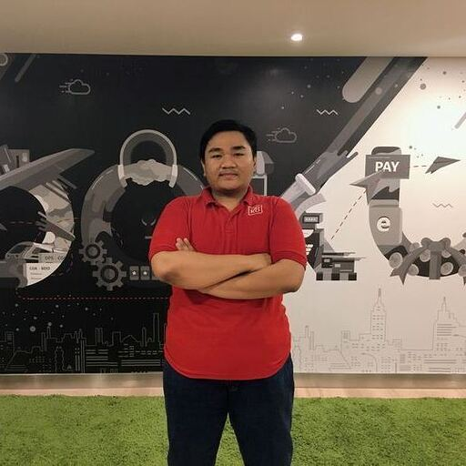

Solutions Architect
|

I'm a Solution Architect with over 11 years of experience in software development, including 9+ years focused on payment technology architecture at DOKU — Indonesia's pioneering payment gateway.
I design core financial systems, reconciliation platforms, transfer services, remittance flows, and API architectures that process millions of transactions. My expertise lies in event-driven architecture, microservices, and nanoservices patterns.
Recently, I've been shifting my focus towards AI-assisted development practices, Vibe Coding, and workflow automation using n8n and LLM integration to accelerate engineering productivity.
Outside of work, I enjoy camping with my family, exploring specialty coffee, and occasional hiking trips — just as the tagline says: scaling systems, exploring trails.
A journey from Java Programmer to Solutions Architect, building payment infrastructure at scale.
Leading solution design across DOKU's core financial platform, transfer services, payment channels, AI-assisted engineering, and DevOps initiatives:
Solution Design & Architecture
API Gateway & Infrastructure
AI-Assisted Engineering & Tooling
DevOps & Platform Engineering
Led the engineering team for KirimDoku / Transfer Service — handling remittance and disbursement products:
Maintained and developed features for KirimDoku / Transfer Service legacy application:
Developed enterprise systems for major retail clients:
Built end-to-end barcode systems for Japanese manufacturing clients:
A curated collection of technologies, tools, and methodologies I work with daily.
Open source contributions, internal engineering initiatives, and personal builds.
A custom n8n community node for compressing and decompressing files using the 7-Zip format. Enables automated file archiving workflows directly within n8n pipelines.
A custom n8n community node extending PostgreSQL capabilities with the COPY command for high-performance bulk data ingestion and extraction in automated workflows.
Reconciliation system couldn't scale to handle growing daily transaction volume
Piloted serverless architecture using Alibaba Cloud Function Compute
Processing millions of transactions daily with auto-scaling, no infrastructure management overhead
Legacy remittance platform built on Play Framework was hard to scale and maintain
Full rewrite to Spring Boot WebFlux and Spring MVC, modern reactive architecture
Improved scalability, maintainability, and developer productivity for the transfer service platform
No standardized onboarding flow for QRIS merchants on DOKU co-brand partners
Designed end-to-end solution architecture for merchant onboarding across multiple partners
Enabled DOKU co-brand partners to onboard QRIS merchants at scale
Need a scalable, reliable workflow automation platform for internal engineering use
Designed and managed self-hosted n8n on Kubernetes (ACK) — Main + Worker + Webhook pods, Redis queue mode, PostgreSQL, NAS-backed PVC
Production-grade automation platform serving multiple engineering teams across SIT, UAT, Sandbox, and Production
Legacy systems using Nginx as inbound proxy couldn't support modern API management needs
Co-built API gateway using Spring Cloud Gateway as inbound proxy for current systems, alongside Nginx for legacy
Dual gateway architecture supporting both legacy and modern microservices with clean separation
Need to evaluate LLM integration for internal engineering productivity
Built Spring Boot 4 / Java project with Ollama on Kubernetes (CPU-only, Qwen models) for UAT/SIT environments
POC for AI-native microservice, foundation for DOKU's AI-assisted engineering adoption